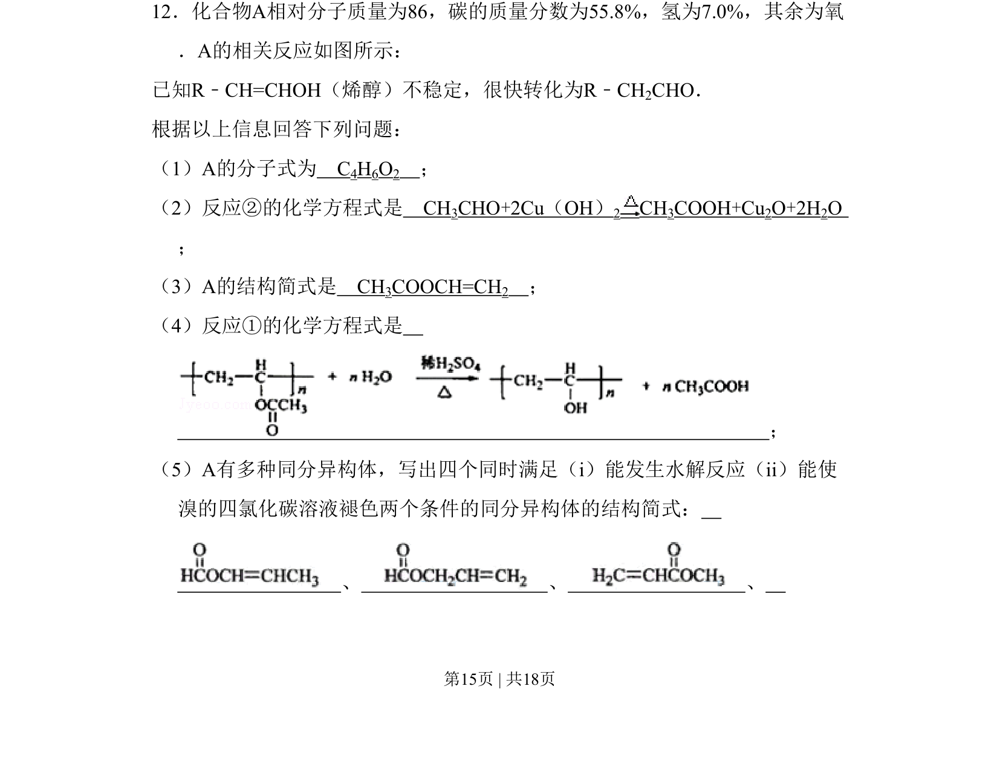
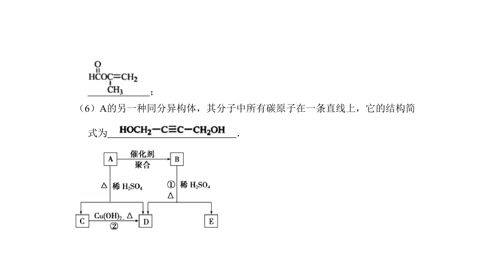
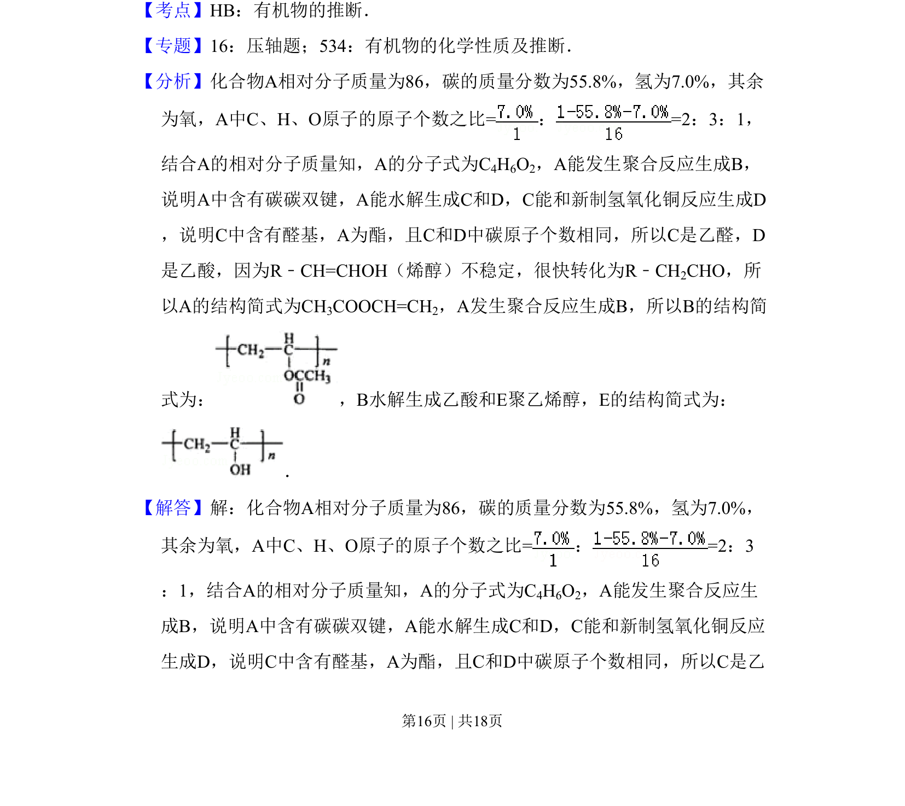
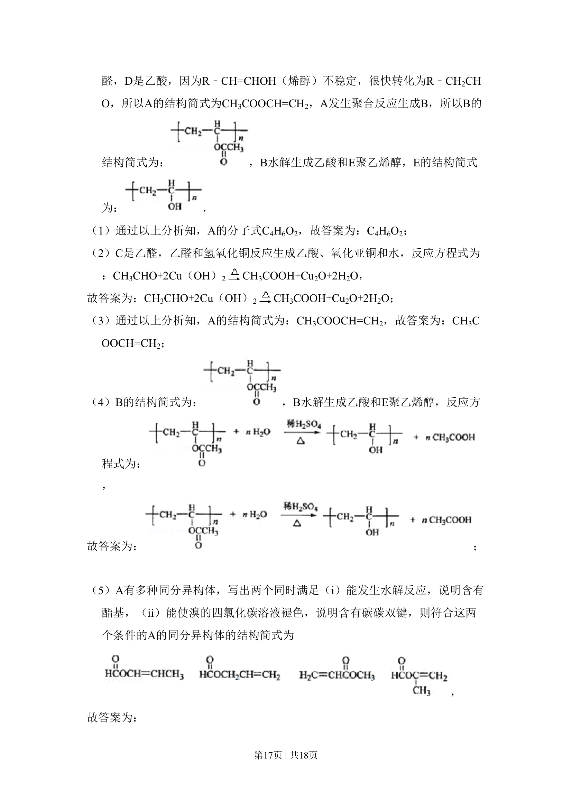
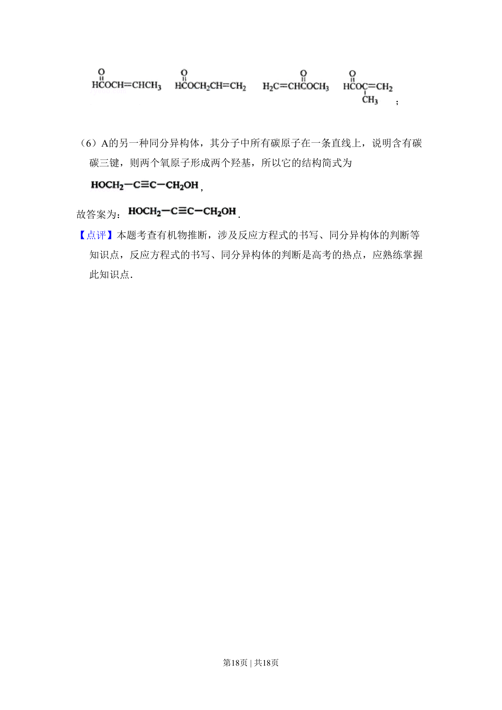

考点：有机化学 分子式确定 反应方程式 同分异构体


该题考查有机化合物分子式确定、结构推断、化学方程式书写及同分异构体书写。



📄 原 PDF 第 15 页：
素材/真题/吉林/2008-2024·（吉林）化学高考真题/2009年高考化学试卷（全国卷Ⅱ）（解析卷）.pdf
12．化合物A相对分子质量为86，碳的质量分数为55.8%，氢为7.0%，其余为氧 ．A的相关反应如图所示： 已知R﹣CH=CHOH（烯醇）不稳定，很快转化为R﹣CH2CHO． 根据以上信息回答下列问题： （1）A的分子式为 C4H6O2 ； （2）反应②的化学方程式是 CH3CHO+2Cu（OH）2 CH3COOH+Cu2O+2H2O ； （3）A的结构简式是 CH3COOCH=CH2 ； （4）反应①的化学方程式是 ； （5）A有多种同分异构体，写出四个同时满足（i）能发生水解反应（ii）能使 溴的四氯化碳溶液褪色两个条件的同分异构体的结构简式： 、 、 、